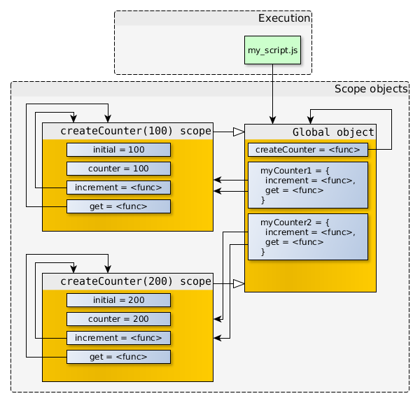

作用域
前言
本人平时学习及收集内容，欢迎参入一起讨论。
内容
一、作用域定义
作用域是指程序源代码定义变量的区域。
作用域规定了如何查找变量，也就是确定当前执行代码对变量的访问权限。
JavaScript 采用词法作用域，也就是静态作用域。
var value = 1;
function foo() {
console.log(value);
}
function bar() {
var value = 2;
foo();
}
bar();
// 结果是 1
2
3
4
5
6
7
8
9
10
11
12
13
14
15
16
二、变量对象
如果变量与执行上下文相关，那变量自己应该知道它的数据存储在哪里，并且知道如何访问。这种机制称为变量对象。
变量对象是与执行上下文相关的数据作用域，存储了在上下文中定义的变量和函数声明。
- 全局上下文的变量对象初始化是全局对象
- 函数上下文的变量对象初始化只包括 Arguments 对象
- 在进入执行上下文时会给变量对象添加形参、函数声明、变量声明等初始的属性值
- 在代码执行阶段，会再次修改变量对象的属性值
三、作用域链
**作用域链：**当访问一个变量时，解释器会首先在当前作用域查找标示符，如果没有找到，就去父作用域找，直到该变量的标示符不在父作用域中，这就是作用域链。
作用域链和原型继承查找时的区别：如果去查找一个普通对象的属性，但是在当前对象和其原型中都找不到时，会返回 undefined；但查找的属性在作用域链中不存在的话就会抛出 ReferenceError。
3.1 无嵌套的函数
// my_script.js
"use strict";
var foo = 1;
var bar = 2;
function myFunc() {
var a = 1;
var b = 2;
var foo = 3;
console.log("inside myFunc");
}
console.log("outside");
myFunc();
2
3
4
5
6
7
8
9
10
11
12
13
14
15
16
17
18
**定义时：**当 myFunc 被定义的时候，myFunc 的标识符（identifier）就被加到了全局对象中，这个标识符所引用的是一个函数对象（myFunc function object）。
内部属性[[scope]]指向当前的作用域对象，也就是函数的标识符被创建的时候，我们所能够直接访问的那个作用域对象（即全局对象）。

myFunc 所引用的函数对象，其本身不仅仅含有函数的代码，并且还含有指向其被创建的时候的作用域对象。
**调用时：**当 myFunc 函数被调用的时候，一个新的作用域对象被创建了。新的作用域对象中包含 myFunc 函数所定义的本地变量，以及其参数（arguments）。这个新的作用域对象的父作用域对象就是在运行 myFunc 时能直接访问的那个作用域对象（即全局对象）。

3.2 有嵌套的函数
当函数返回没有被引用的时候，就会被垃圾回收器回收。但是对于闭包，即使外部函数返回了，函数对象仍会引用它被创建时的作用域对象。
"use strict";
function createCounter(initial) {
var counter = initial;
function increment(value) {
counter += value;
}
function get() {
return counter;
}
return {
increment: increment,
get: get
};
}
var myCounter = createCounter(100);
console.log(myCounter.get()); // 返回 100
myCounter.increment(5);
console.log(myCounter.get()); // 返回 105
2
3
4
5
6
7
8
9
10
11
12
13
14
15
16
17
18
19
20
21
22
23
24
当调用 createCounter(100) 时，内嵌函数 increment 和 get 都有指向 createCounter(100) scope 的引用。假设 createCounter(100)没有任何返回值，那么 createCounter(100) scope 不再被引用，于是就可以被垃圾回收。

但是 createCounter(100)实际上是有返回值的，并且返回值被存储在了 myCounter 中，所以对象之间的引用关系如下图：

即使 createCounter(100)已经返回，但是其作用域仍在，并且只能被内联函数访问。可以通过调用 myCounter.increment() 或 myCounter.get()来直接访问 createCounter(100)的作用域。
当 myCounter.increment() 或 myCounter.get()被调用时，新的作用域对象会被创建，并且该作用域对象的父作用域对象会是当前可以直接访问的作用域对象。
调用 get()时，当执行到 return counter 时，在 get()所在的作用域并没有找到对应的标示符，就会沿着作用域链往上找，直到找到变量 counter，然后返回该变量。

单独调用 increment(5)时，参数 value 保存在当前的作用域对象。当函数要访问 counter 时，没有找到，于是沿着作用域链向上查找，在 createCounter(100)的作用域找到了对应的标示符，increment()就会修改 counter 的值。除此之外，没有其他方式来修改这个变量。闭包的强大也在于此，能够存贮私有数据。

创建两个函数：myCounter1和myCounter2
//my_script.js
"use strict";
function createCounter(initial) {
/* ... see the code from previous example ... */
}
//-- create counter objects
var myCounter1 = createCounter(100);
var myCounter2 = createCounter(200);
2
3
4
5
6
7
8
9
10

myCounter1.increment 和 myCounter2.increment 的函数对象拥有着一样的代码以及一样的属性值（name，length 等等），但是它们的[[scope]]指向的是不一样的作用域对象。
四、面试必刷题
var data = [];
for (var i = 0; i < 3; i++) {
data[i] = function () {
console.log(i);
};
}
data[0]();
data[1]();
data[2]();
2
3
4
5
6
7
8
9
10
11
12
13
如果知道闭包的，答案就很明显了，都是 3
循环结束后，全局执行上下文的 VO 是
globalContext = {
VO: {
data: [...],
i: 3
}
}
2
3
4
5
6
7
执行 data[0] 函数的时候，data[0] 函数的作用域链为：
data[0]Context = {
Scope: [AO, globalContext.VO]
}
2
3
4
解决办法
改成闭包，方法就是 data[i]返回一个函数，并访问变量 i
var data = [];
for (var i = 0; i < 3; i++) {
data[i] = (function (i) {
return function(){
console.log(i);
}
})(i);
}
data[0](); // 0
data[1](); // 1
data[2](); // 2
2
3
4
5
6
7
8
9
10
11
12
13
14
参考资料
- JavaScript 深入之作用域链
- JavaScript 深入之词法作用域和动态作用域
- 深入浅出图解作用域链和闭包
- 深入理解 JavaScript 系列（14）：作用域链(Scope Chain)
- 深入理解 JavaScript, 从作用域与作用域链开始
联系作者
平凡世界，贵在坚持。